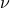
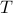
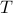
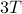
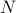

Periodicity
Fourier Series is the study of periodic phenomena (but the techniques we learn from it will generalize to thinking about many other non-periodic things as well). Note that even though we often think of periodic things in terms of a graph, we don't always have to; there's many other ways to think about them; in fact, sometimes they can be less misleading and more enlightening than a graph.
We all know periodic behavior when we see it:
A periodic phenomenon is one with a regularly repeating pattern.
There are two flavors of periodicity that are conceptually a bit different:
Periodicity in time, where you sit at a fixed point in space and wait for the signal to wash over you
Periodicity in space, where you take a snapshot at some instant, freeze the wave, and look at the entire pattern at once.
The two concepts of spatial and temporal periodicity naturally come together when we talk about wave motion. In class, we went through a very fun and vivid demonstration by doing a ‘‘stadium wave’’ where our hands went up and down and a wave swept across the lecture hall! We also made it a periodic signal by starting the wave over again once it hit the end of the classroom. With this example it became very clear the difference between a pattern in time and a pattern in space: The former describes what a particular individual (say Mary) sitting in the crowd experiences over time, while the latter describes the entire crowd at a given frozen instant in time, where some people have their hands up and others have their hands down.
Mathematically, I interpreted the professor's statements as follows: if we have some function of both position and space  , and we wish to consider just some one-dimensional ‘slice’ of it, we can either fix a particular position and see the behavior along the time coordinate by looking at , or alternatively, we can freeze at a particular time
, and we wish to consider just some one-dimensional ‘slice’ of it, we can either fix a particular position and see the behavior along the time coordinate by looking at , or alternatively, we can freeze at a particular time  and see the behavior along the spatial coordinate . Both
and see the behavior along the spatial coordinate . Both  and/or
and/or  can be periodic, but the physical interpretation is different in the two cases.
can be periodic, but the physical interpretation is different in the two cases.
Dispersion relation
We then defined more basic terminology of how to talk about repeating patterns in time or in space:
Periodicity in time is described by the frequency, denoted
 (lambda). It is the number of times the pattern repeats every second, and has units of 1/time. Typically it's 1/second or Hz.
(lambda). It is the number of times the pattern repeats every second, and has units of 1/time. Typically it's 1/second or Hz.Periodicity in space is described by the wavelength, denoted  (nu). It is the (spatial) distance between repeating patterns, and it has units of length.
For a travelling wave, the frequency and wavelength are related by the dispersion relation , where v is the speed of the travelling wave. Note that this statement is the only dimensionally possible answer (since speed has units of length / time); it's just a restatement of the classic statement ‘‘distance equals rate times time’’.
Of course, this stuff was not new to anyone in the class. The professor recognized this and remarked that even though the material was hardly challenging, it was well worth going over just to standardize the notation. Moreover, the dispersion relation was the first example in our class of a reciprocal relationship between two fundamental physical quantities. That is, the wavelength and the frequency are inversely related – if one went up, the other would go down. Again, this concept is not terribly hard, but it turns out to be a deep organizational principle in the course, and it'll be a common theme in Fourier analysis.
Now that we had the basics out of the way, it was time to be a bit more precise about ‘‘pattern’’ and ‘‘periodic’’.
Periodic Functions
So far we've just talked about periodic patterns; to be more specific, let's say that the pattern is in the value of a function. When we say that the pattern ‘‘repeats,’’ we just mean that the function takes on the same value after some period. This leads to the definition
A function  is periodic if its values repeat. In other words, if we can find some period
is periodic if its values repeat. In other words, if we can find some period  such that
such that

for all  , then we say that is periodic with period . The smallest value of for which this holds is called the fundamental period or more commonly just ‘‘the period.’’
, then we say that is periodic with period . The smallest value of for which this holds is called the fundamental period or more commonly just ‘‘the period.’’
We made a few remarks at this point:
Earlier we were talking generally about patterns, now we're talking about the value of a function.
We called the argument of the function
, but there's no reason for it to necessarily represent time; we just need to put something there, so might as well call it .Mathematicians call
a function; engineers call it a signal. It's the same concept, just different lingo. (Physicists call it a function too…)This is a rather strict requirement on a function! It has to hold for all
, and the period must be quite special…
We also made a few comments about how a periodic function necessarily has many different periods; that is, if is a period, then , , etc. are all periods of the function. We can intuitively see this, since if the pattern repeats every units of time, it must repeat again after units; mathematically,
A similar argument holds for negative values of the period; that is, if is a period, then is also a period as well, since
Combining these facts, we end up with the result that for any integer , a function periodic with period is also periodic with period ; that is, .
We made one final point about the many possible periods. Normally, we when talk about ‘‘the period’’ of a function, we mean the smallest possible period, and it's sort of implied that the pattern also repeats after any integer multiple of that period. But the fact that the function also has periods will become another theme of the course; who knows, maybe this can motivate the Fourier series a bit too…
Sine and Cosine
Well, we've been talking about periodic functions for a bit now, but we really should make sure these mathematical objects actually do exist. Miraculously, they do – we have the nice model functions of and , which, as we all know and love, are periodic functions with a fundamental period of .
Again, the professor remarked that of course we're all intimately familiar with our sines and cosines. But there's nothing more satisfying than reflecting on what we already know to feel better about ourselves, so we spent a bit of time doing that.
There are a few ways to ‘‘define’’ the sine and cosine; some of which are more enlightening than others:
Our first exposition was likely in trigonometry class, where we learned the ratio-of-sides-of-a-triangle definition. However, this picture only made sense for acute angles
 where , so it wasn't the full picture.
where , so it wasn't the full picture.In calculus class, we learned about Taylor series, and then sine and cosine could be represented as the sum of an infinite power series as
Or perhaps even later, in the study of differential equations, the sines and cosines proved to be a nice basis for the solution set of the differential equation , which is true, but doesn't help us really understand the nature of these functions…
None of these definitions, however, helps us understand why these glorious functions are periodic; that is, why . For this insight, we need use the definition of sines and cosines as coordinates on the unit circle. If we do this, it becomes quite clear that the (very nontrivial!) property of periodicity comes from ‘‘wrapping around’’: when you increase the angle by  , you return to the same point on the unit circle, and for this reason, the function repeats every radians.
, you return to the same point on the unit circle, and for this reason, the function repeats every radians.
On this note, class was dismissed.